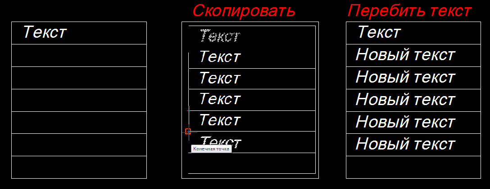
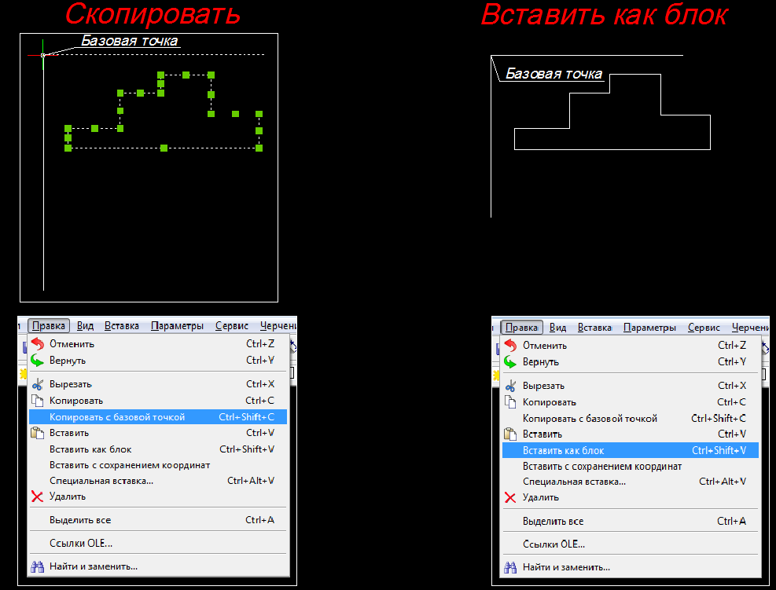

В этой главе я хочу показать некоторые приёмы работы в BricsCad, позволяющие ускорить работу
Вместо создания нового текста быстрее и удобнее копировать старый текст.
Затем активизировав его двойным щелчком мыши перебить на новый.

Чтобы преобразовать в блок набор элементов удобно пользоваться командами
"Копировать с базовой точкой" и "Вставить как блок"
Они расположены в меню "Правка"
Блок будет создан на том же месте, где был набор элементов.

Слои
- Слои можно представить как стопку прозрачных калек, на каждой из которых начерчено какое-то своё изображение, но в итоге складывается в одно целое;
- удобство черчения с использованием слоёв состоит в том, что любой слой можно временно заморозить или удалить совсем, сделать невидимым, поменять его свойства;
- новый слой можно создать, открыв окно редактирования слоёв в Проводнике(см. слайды ниже);
- выбирать активный слой для черчения на нём можно через раскрывающийся список слоёв (см. слайды ниже).
Просмотреть слайды по использованию слоёв
(щёлкните ЛКМ по любому рисунку, затем значок ► или ◄)
Использование "ручек" для редактирования объектов
- Если выделить объект, то в его конечных и узловых точках появятся зелёные квадратики
(т.н. "ручки");
- "ручки" можно использовать для редактирования элементов(изменения их формы и размеров, если элемент является блоком или текстом - для перемещения;
- у отрезка крайние точки используются для изменения размеров, а средняя для перемещения.
Просмотреть слайды по использованию "ручек"
(щёлкните ЛКМ по любому рисунку, затем значок ► или ◄)
Использование "Найти и заменить"
- Для поиска,замены и выделения текста на чертеже удобно использовать команду Найти и заменить;
- команда расположена в меню Правка;
- порядок работы с командой можно посмотреть на слайдах ниже.
Просмотреть слайды по использованию "Найти и заменить"
(щёлкните ЛКМ по любому рисунку, затем значок ► или ◄)
Поиск групп элементов чертежа по их свойствам
- Для поиска групп элементов чертежа с одинаковыми свойствами удобно использовать окно
Быстрого поиска,расположенное внутри окна свойств;
- порядок работы с командой можно посмотреть на слайдах ниже.
Просмотреть слайды по использованию "Окна быстрого поиска"
(щёлкните ЛКМ по любому рисунку, затем значок ► или ◄)
{kind=link}
{kind=link}
{kind=link}
{kind=link}
{kind=link}
{kind=link}
{kind=link}
{kind=link}
{kind=link}
{kind=link}
{kind=link}
{kind=link}
{kind=link}
{kind=link}
{kind=link}
{kind=link}
{kind=link}
{kind=link}
{kind=link}